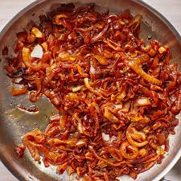

Recipes
Onions and Mushrooms

Description
Onions and Mushrooms are one of my favorite things about steak day and burger day. raw is fine but caramelized is different and you’ll
soon find out as well.
Ingredients
- Onions
- Mushrooms
- Salt
- Pepper
- Butter
- Soy Sauce
Steps
- Cut onions into thin slices and mushrooms into thicker slices.
- Heat up at Skillet on medium low heat. stainless steel or cast
is best.
- Once pan has heated up 10-15mins put 2 TBS of butter in pan and
add in onions. Stir frequently and often after about 10mins when
onions become translucent salt heavily kosher is best about 1-2TBS
- After another 5-10mins add in mushrooms. You’ll notice theres
a lot of water when they start cooking down be patient if you can’t
turn up the heat to medium high and leave small circle of room on bottom of
pan you should be able to see the bottom.
- When you see the onions and mushrooms look like mush thats perfect add some
pepper and 2TBS of soy sauce to deglaze the pan and they’ll come up.
- They are ready to serve on your favorite meat or veggie